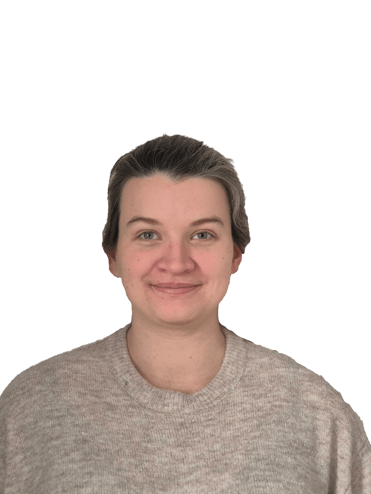

Jag heter Eliza Hadlowska och är 27 år gammal. Jag kommer ursprungligen från Polen men har bott i Sverige sedan jag var liten. Jag bor på en liten gård utanför Östersund med min sambo, ett barn (och ett till påväg), våra hundar, kaniner, höns och ankor.